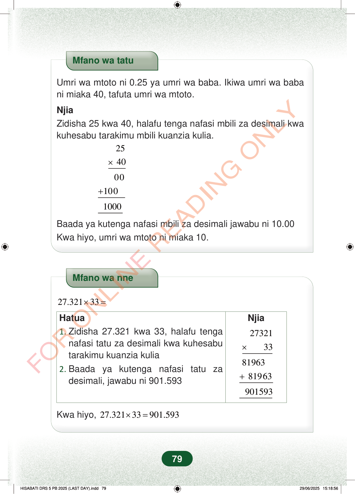

Mfano wa tatuUmri wa mtoto ni 0.25 ya umri wa baba. Ikiwa umri wa babani miaka 40, tafuta umri wa mtoto.NjiaZidisha 25 kwa 40, halafu tenga nafasi mbili za desimali kwakuhesabu tarakimu mbili kuanzia kulia.×2540+001001000Baada ya kutenga nafasi mbili za desimali jawabu ni 10.00Kwa hiyo, umri wa mtoto ni miaka 10.Mfano wa nne27.32133×=Njia×2732133+8196381963Hatua1.Zidisha 27.321 kwa 33, halafu tenganafasi tatu za desimali kwa kuhesabutarakimu kuanzia kulia2.Baada ya kutenga nafasi tatu zadesimali, jawabu ni 901.593901593Kwa hiyo,27.32133901.593×=79
Mfano wa tatu
Umri wa mtoto ni 0.25 ya umri wa baba. Ikiwa umri wa baba ni miaka 40, tafuta umri wa mtoto.
Njia Zidisha 25 kwa 40, halafu tenga nafasi mbili za desimali kwa kuhesabu tarakimu mbili kuanzia kulia.
×
25 40
00 100
1000
Baada ya kutenga nafasi mbili za desimali jawabu ni 10.00 Kwa hiyo, umri wa mtoto ni miaka 10.
Mfano wa nne
27.321 33 × =
Njia
×
27321 33
81963 81963
Hatua 1. Zidisha 27.321 kwa 33, halafu tenga nafasi tatu za desimali kwa kuhesabu tarakimu kuanzia kulia 2. Baada ya kutenga nafasi tatu za desimali, jawabu ni 901.593
901593
Kwa hiyo, 27.321 33 901.593 × =
79
Mfano wa tatu unaonyesha kuwa umri wa mtoto ni 0.25 ya umri wa baba mwenye miaka 40. Kwa kuzidisha 25 kwa 40 na kutenga nafasi mbili za desimali, jibu ni miaka 10.Mfano wa tatuUmri wa mtoto ni 0.25 ya umri wa baba.Ikiwa umri wa baba ni miaka 40, tafuta umri wa mtoto.NjiaZidisha 25 kwa 40, halafu tenga nafasi mbili za desimali kwa kuhesabu tarakimu mbili kuanzia kulia.25× 4000+1001000Baada ya kutenga nafasi mbili za desimali jawabu ni 10.00Kwa hiyo, umri wa mtoto ni miaka 10.Mfano wa nne unaonyesha kuzidisha 27.321 kwa 33. Baada ya kufanya hesabu na kutenga nafasi tatu za desimali, jibu ni 901.593.Mfano wa nne<math><mrow><mn>27.321</mn><mo>×</mo><mn>33</mn><mo>=</mo></mrow></math>Hatua1. Zidisha 27.321 kwa 33, halafu tenga nafasi tatu za desimali kwa kuhesabu tarakimu kuanzia kulia2. Baada ya kutenga nafasi tatu za desimali, jawabu ni 901.593Njia27321× 3381963+ 81963901593Kwa hiyo, 27.321×33 = 901.593